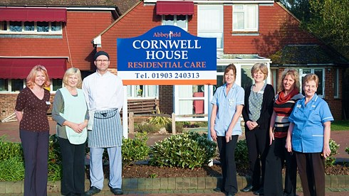

Residential Care in Ferring

Cornwell House is our Residential Care Home, situated in the heart of south Ferring village, and is the third stage of care that Abbeyfield Ferring offers. The home was opened in 1982 and was named after the late Bill and Joan Cornwell. Respite care and short-term stays are possible, subject to availability.
We are registered with the Care Quality Commission to provide residential care for twenty older people. Our aim is to provide the best quality care for each resident in comfortable surroundings, supported by a well-trained dedicated staff (all of whom are enhanced DBS checked), ensuring that residents are treated with dignity, courtesy and respect at all times. We pride ourselves in creating a friendly, homely atmosphere.
We currently have room vacancies. We also have staff vacancies for carers. Please get in contact with us if you're interested!
Dee Reilly
Dee, our Home Manager, has an Advanced Care Management Award, and more than twenty years’ experience in providing high quality care for older people. She strives to achieve a friendly, cheerful and homely environment whilst ensuring that high quality standards are maintained.
Living with Us
Accommodation is on two floors, serviced by a lift. We have a spacious main lounge with an adjoining sun lounge, and in addition there is a small lounge and sun lounge available for residents seeking quiet or privacy with relatives or visitors. We also have an extensive back garden with sun house.
We have a bright and airy dining room that is used for meals, both for guests and residents. Our two dedicated cooks prepare all of our meals with fresh natural local ingredients. Should they wish to, our residents can also take their meals in their own rooms.
All communal areas and most residents’ rooms are wheelchair accessible. Cornwell House has a no smoking policy.
Our Rooms
All bedrooms have an en-suite toilet and washbasin. We also have two assisted bathrooms and an assisted shower room. All of the rooms are linked to the care home’s emergency call system so that residents can summon assistance from a member of staff at any time of day or night. A television and telephone point is fitted into each bedroom, and residents can have their own telephone line installed should they want to.
Rooms are decorated to a high standard and in a style which is in keeping with the homely atmosphere that we try to maintain. Residents are encouraged to personalise their rooms by bringing in small items of furniture and belongings if they wish. Any electrical items brought into the home will need to be checked to be certain that they are safe for use. Each bedroom has a private lockable storage facility for personal or valuable items.
Residents’ relatives, friends and representatives are always welcome in the home, and to stay for meals (for which a small charge is made).
Coming to Stay
Admission to the home is usually by prior arrangement, following a Care Assessment by the Home Manager to ensure that the resident’s care needs can be met. All prospective residents are invited to view the home prior to admission and spend time with a member of the care team who will answer any questions that they may have.
Unless there are exceptional circumstances, we do not normally accept emergency admissions, but as mentioned we will accept respite care should there be a room available.
Activities
We have an ongoing activities and entertainment programme within the home. Residents are encouraged to participate, maintaining their links with each other and the local community. These include:
- Bingo
- Light exercise
- Reminiscence
- Music
- Arts and crafts
- Visits by animals
- Minibus trips
Local clergy are invited into the home. Services and private communion are available to residents as required, and transport may be arranged for residents to attend local churches.
The Friends of Ferring provide transport for hospital visits and appointments. Regular in-house hairdressing and chiropody are available to residents for a moderate charge.
Come and see us!
If you are interested in having a look around Cornwell House, visits are possible at any time during daylight hours (before 7 P.M.). Whether you want to arrange a visit with us or just have a general enquiry, please do get in contact with us! We currently have two room vacancies.